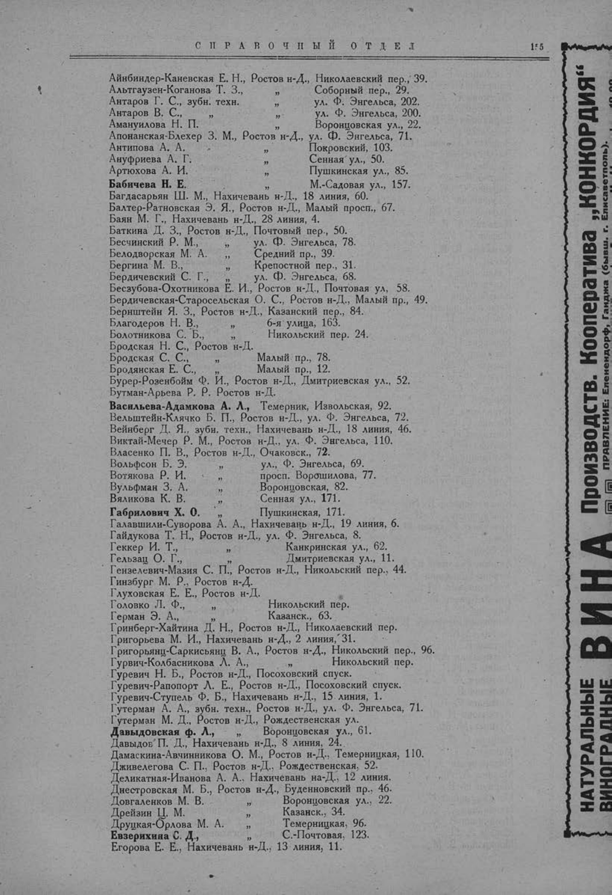

Лист источника 205
Скан

Распознанный текст
СПРАВОЧНЫЙ ОТДЕЛ 155
Айнбиндер-Каневская Е. Н., Ростов н-Д., Николаевский пер., 39.
Альтгаузен-Коганова Т. З., " Соборный пер., 29.
Антаров Г. С., зубн. техн. " ул. Ф. Энгельса, 202.
Антаров В. С., " " ул. Ф. Энгельса, 200.
Амануилова Н. П. " Воронцовская ул., 22.
Апонанская-Блехер З. М., Ростов н-Д., ул. Ф. Энгельса, 71.
Антипова А. А. " Покровский, 103.
Ануфриева А. Г. " Сенная ул., 50.
Артюхова А. И. " Пушкинская ул., 85.
Бабичева Н. Е. " М.-Садовая ул., 157.
Багдасарьян Ш. М., Нахичевань н-Д., 18 линия, 60.
Балтер-Ратновская Э. Я., Ростов н-Д., Малый просп., 67.
Баян М. Г., Нахичевань н-Д., 28 линия, 4.
Баткина Д. З., Ростов н-Д., Почтовый пер., 50.
Бесчинский Р. М., " ул. Ф. Энгельса, 78.
Белодворская М. А. " Средний пр., 39.
Бергина М. В., " Крепостной пер., 31.
Бердичевский С. Г., " ул. Ф. Энгельса, 68.
Бесзубова-Охотникова Е. И., Ростов н-Д., Почтовая ул, 58.
Бердичевская-Старосельская О. С., Ростов н-Д., Малый пр., 49.
Бернштейн Я. З., Ростов н-Д., Казанский пер., 84.
Благодеров Н. В., " 6-я улица, 163.
Болотникова С. Б., " Никольский пер. 24.
Бродская Н. С., Ростов н-Д.
Бродская С. С., " Малый пр., 78.
Бродянская Е. С., " Малый пр., 12.
Бурер-Розенбойм Ф. И., Ростов н-Д., Дмитриевская ул., 52.
Бутман-Арьева Р. Р. Ростов н-Д.
Васильева-Адамкова А. Л., Темерник, Извольская, 92.
Вельштейн-Клячко Б. П., Ростов н-Д., ул. Ф. Энгельса, 72.
Вейнберг Д. Я., зубн. техн., Нахичевань н-Д., 18 линия, 46.
Виктай-Мечер Р. М., Ростов н-Д., ул. Ф. Энгельса, 110.
Власенко П. В., Ростов н-Д., Очаковск., 72.
Вольфсон Б. Э. " ул., Ф. Энгельса, 69.
Вотякова Р. И. " просп. Ворошилова, 77.
Вульфман З. А. " Воронцовская, 82.
Вяликова К. В. " Сенная ул., 171.
Габрилович Х. О. " Пушкинская, 171.
Галавшили-Суворова А. А., Нахичевань н-Д., 19 линия, 6.
Гайдукова Т. Н., Ростов н-Д., ул. Ф. Энгельса, 8.
Геккер И. Т., " Канкринская ул., 62.
Гельзац О. Г., " Дмитриевская ул., 11.
Гензелевич-Мазия С. П., Ростов н-Д., Никольский пер., 44.
Гинзбург М. Р., Ростов н-Д.
Глуховская Е. Е., Ростов н-Д.
Головко Л. Ф., " Никольский пер.
Герман Э. А., " Казанск., 63.
Гринберг-Хайтина Д. Н., Ростов н-Д., Николаевский пер.
Григорьева М. И., Нахичевань н-Д., 2 линия, 31.
Григорьянц-Саркисьянц В. А., Ростов н-Д., Никольский пер., 96.
Гурвич-Колбасникова Л. А., " Никольский пер.
Гуревич Н. Б., Ростов н-Д., Посоховский спуск.
Гуревич-Рапопорт Л. Е., Ростов н-Д., Посоховский спуск.
Гуревич-Ступель Ф. Б., Нахичевань н-Д., 15 линия, 1.
Гутерман А. А., зубн. техн., Ростов н-Д., ул. Ф. Энгельса, 71.
Гутерман М. Д., Ростов н-Д., Рождественская ул.
Давыдовская Ф. Л., " Воронцовская ул., 61.
Давыдов П. Д., Нахичевань н-Д., 8 линия, 24.
Дамаскина-Авчинникова О. М., Ростов н-Д., Темерницкая, 110.
Дживелегова С. П., Ростов н-Д., Рождественская, 52.
Деликатная-Иванова А. А., Нахичевань на-Д., 12 линия.
Днестровская М. Б., Ростов н-Д., Буденновский пр., 46.
Довгаленков М. В. " Воронцовская ул., 22.
Дрейзин Ц. М. " Казанск., 34.
Друцкая-Орлова М. А. " Темерницкая, 96.
Евзерихина С. Д., " С.-Почтовая, 123.
Егорова Е. Е., Нахичевань н-Д., 13 линия, 11.
НАТУРАЛЬНЫЕ ВИНОГРАДНЫЕ ВИНА Производств. Кооператива „КОНКОРДИЯ“
ПРАВЛЕНИЕ: Еленендорф, Ганджа (бывш. г. Елисаветполь).